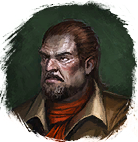

Лиметит
Предметы / Добыча
Открыть в интерактивной вики →
| Вес | 65 |
|---|---|
| Цена | 21 |
Описание
Требуется для входа в инстанс  Драугул и
Драугул и  Ивравул. А также для выполнения некоторых заданий.
Ивравул. А также для выполнения некоторых заданий.
Вы можете огранить этот камень у Тиземлин, а затем продать его
Тиземлин, а затем продать его
Драугул и Ивравул. А также для выполнения некоторых заданий. Вы можете огранить этот камень у
Тиземлин, а затем продать его 
Дарко Гнарл.| Этот камень можно огранить у Тиземлина, а затем продать Дарко Гнарлу. |
Касания
Связи:  Ограненный лиметит
Ограненный лиметит
Ограненный лиметитГде найти
Применение
|
Как добыть
| Сбор в локации: |